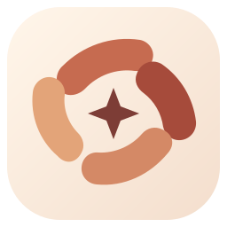
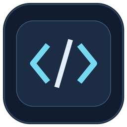
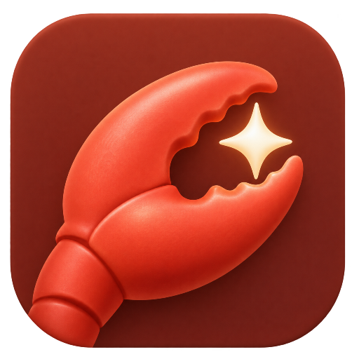

01 — 多模型工作台
easy API平台
把不同模型与创作工具放进一个桌面工作空间，从聊天到工作，随时切换。
- 接入多个模型 API，管理服务与模型
- 八种模式 + 视频抽帧与字幕分析
- 主题、思考强度和工作目录设置

easy.下载 Windows 版一个灵感，一段代码，一次陪伴。
十款应用，让开发、工作、浏览、游戏、陪伴和音乐各得其所。
Windows 10 / 11 · 64 位 · 自备模型 API

按任务选择工具。
每个应用都可以独立安装、独立使用。
把不同模型与创作工具放进一个桌面工作空间，从聊天到工作，随时切换。
围绕一个持续的聊天开展编码任务，让文件、命令与思路在同一个地方衔接。
用中文安排任务，让这个温暖的小伙伴在授权范围内，帮你处理电脑上的事情。
easy Browser 现已更新至 1.0.0-rc.2，包含广告过滤、游戏全屏与网页 AI 助手。
标签与会话恢复、无痕窗口、密码助手；可关联 easy API 设置，按需让 AI 阅读网页文字。
认识 easy Browser ↗ 单独下载浏览器 ↓
easy Games、easy Pet、easy Music 独立安装，不包含在三款整合包中。
 easy Games
easy Games给碎片时间一点快乐：离线小游戏、原创 3D、同一服务器房间联机和 API 对战，各有自己的入口。
把喜欢的 AI 二创角色养成桌面伙伴。从宠物蛋开始照顾，选择伙伴、聊聊天，也让它在桌面慢慢走。
给本地音乐和视频一个温暖的家。打开 MP3、M4A 或 MP4，用简单的列表和控制，找回自己的节奏。
 easy AI friend
easy AI friend新建对话填写名字、提示词、用户称呼、API 与头像；完整对话保存在本机，可关联 easy API 设置。
独立安装包已发布
介绍与使用教程 ↗
easy Claw集成官方 OpenClaw 2026.11.2 运行时，管理独立本机网关、工作目录和模型，打开官方控制界面使用其能力。
独立安装包已发布
介绍与使用教程 ↗ easy Dev
easy Dev写代码、运行测试，或用离线积木做作品。支持 C++、Python、Java、HTML，以及可关联 API 的项目编程助手。
紧凑 IDE 界面 · 自带积木编辑器 · 图形化无 AI
介绍与使用教程 ↗easy API平台的完整模式指南。
换一种任务，不必换一个工作空间。
日常聊天、办公写作、代码开发，也可以是音乐、图像或三维模型。选择合适的模式，再连接适合这项任务的模型。下方示例是任务写法，实际结果取决于模型、服务接口与本机环境。
适合日常交流、知识问答、语言练习、翻译和文字润色。在连续对话中补充背景，逐步把模糊的想法梳理清楚。
整理计划、分析资料、起草报告，把工作拆成清晰步骤。可调用本机 Microsoft Office 创建 Word、Excel 与 PowerPoint 文件，保存到工作目录。
解释代码、定位报错、编写脚本与完善项目。允许电脑操作并选好目录后，可申请读取、写入文件或执行命令，让讨论衔接到实际修改。
围绕具体目标使用浏览器、处理文件或调用电脑工具。请在任务中写明操作类型与目标，例如打开网页、打开电脑软件或整理文件，并先设置工作目录和批准方式。
用文字描述物体、布局、材质和灯光，由 AI 编写 Blender 建模脚本，调用本机 Blender 创建场景并保存建模文件。
描述风格、节奏、乐器和时长，生成并保存 WAV 纯音乐文件。适合为小项目、演示或创意尝试探索一段配乐。
通过图片生成接口，把主体、构图、风格和光线描述转换为图片；界面也提供视频生成类型与画幅选择，并支持将生成结果保存到工作目录。
首次发送不附加预设系统提示词。随后可让 AI 为当前对话编写和调整提示词，查看或清空已生成的内容，并按授权使用相关任务工具。
本地抽帧 · 时间戳 · 字幕附件
easy API平台视频读取更新
上传一个本地视频，先预览，再提问。适合概括画面、分析教程步骤或查找屏幕上出现的信息。视频分析使用现有视觉模型接口，无需把原视频整段传到服务器。
通过附件按钮选择视频，单个文件最多 200 MB。按时长均匀抽取最多 12 张画面，并在本机压缩。常见 MP4 / WebM 可用；MOV / M4V / MKV 是否可读取决于具体编码。
点击附件缩略图可播放本地视频、查看抽样画面与时间戳。可另附 SRT / VTT 字幕，帮助模型理解对白。每条消息最多一个视频、共三个附件。
点击发送后，只上传抽帧画面和你附带的字幕文本；不上传原视频或音轨。不支持视觉输入的服务无法分析画面，仍可单独分析字幕。
从输入的第一句话，
到保存在电脑上的文件。
管理多个 API 配置，在输入栏切换服务、当前模型和思考强度。兼容性取决于服务商实际提供的接口；接入入口不代表每种模型都有全部工具能力。
上传 PDF、文本、代码、图片和视频，也可粘贴刚截取的图片。新增本地视频抽帧及 SRT/VTT 字幕附件；PDF 在本机提取文字，扫描件不支持文字提取。图片和视频画面分析需要视觉模型。
可启用联网搜索，读取公开网页来补充当前问题。模型服务和搜索服务都需要可用网络；网页中的内容作为参考，不能替代用户授予的电脑权限。
把回复保存为文件，在指定目录开展文件工作流；办公、建模与音乐模式可调用对应工具生成文件。输出不必只停留在聊天气泡中。
查看进行中的任务用时、完成后的耗时和可折叠 Token 用量。可暂停、继续，也可在工作时补充引导。供应商未返回用量时，显示值可能是估算。
调整主题色、副色、界面大小、思考动画与音效，选择适合自己的视觉风格。收起侧边栏和功能区，让注意力回到当前任务。
以下是任务思路示例，
不是保证成功的预制结果。
提供笔记和任务背景，在 Work 中整理结论、负责人和时间安排。需要文档时，再授权调用 Office，将成果写进工作目录。
资料输入 → 要点整理 → 文档输出选中项目目录，描述如何触发问题。让模型先读代码、提出修改，再按你选择的批准方式运行工具和检查命令。
描述问题 → 理解代码 → 修改与检查设置允许的网站与目录，让 Otti 帮你浏览、整理或创建文件。你开始操作电脑时，任务暂停；需要专心输入隐私内容时，手动开启隐私暂停。
设定范围 → 安排任务 → 查看结果不必一次装全。
先按眼前最常做的事来选。
适合日常问答、翻译、文字润色和学习讨论。先用 Chat，熟悉后再尝试 Work、附件和其他模式。
适合总结 PDF、整理笔记、起草报告和制定计划。Work 可用于组织 Word、Excel、PPT 内容并调用本机 Office 创建文件。
适合读项目、分析报错、改文件、写脚本和运行验证命令。围绕一个聊天连续工作，减少多余的模式切换。
适合写文案、分析参考视频、探索图片、纯音乐或三维场景。Chat / Work 组织思路，Picture、Song、Model 处理不同创作方向。
适合在允许的网站中浏览信息、在指定目录中整理或创建文件，以及使用已授权的本地应用完成任务。
适合简单文本交流，或先体验内置 Qwen 0.6B、Gemma 270M 本地模型。离线使用仍需要模型文件及本地运行组件完整。
日常聊天与多种创作选 easy API平台；专注项目编码选 easy Code；希望安排电脑任务选 Otti。三个方向都经常用，再选择整合版。
选好了？跟着入门教程开始 ↓2026.11.10 · 十款独立应用 · Windows x64
仅支持 Windows 10 / 11，64 位。
本次更新：新增 easy Dev 开发工具；easy Claw 0.1.1 修复配置回显、缩放布局与运行状态。
easy API平台 + easy Code + Otti
一次安装，按需要打开你的 AI 伙伴。
847.3 MiB · 默认 D:\easy API平台
115.3 MiB · 默认 D:\easy Code
121.3 MiB · 默认 D:\Otti
 单独下载 ↓单独下载 ↓单独下载 ↓单独下载 ↓
单独下载 ↓单独下载 ↓单独下载 ↓单独下载 ↓本站尚未配置下载仓库。站长请在 config.js 中填写 repository，并将这四个安装包上传到对应版本的 GitHub Release。
在任意桌面应用切换简体中文或 English，其他关联应用会自动跟随。首次使用按 Windows 语言选择；安装向导也可重新选择。官网独立记住浏览器语言，也支持手动切换。
选择独立版或整合版。默认安装到 D 盘，也可以在安装向导里更改位置。
在应用设置中填入自己的 API 地址、模型和密钥。在线模型用量由对应服务商计费。
开始聊天或安排任务。涉及电脑操作时，先确认工作目录、网站及批准方式。
三个应用的交互式入门指南。
选择应用，再逐步查看操作。
请在已安装的桌面应用中完成操作。这里是使用教程，不会从网页启动应用、连接模型或执行电脑任务。
先连接模型，再选择模式。第一次使用建议从 Chat 开始，确认能正常回复后再尝试附件与工具。
打开「设置」，找到 API 设置。选择服务商，填入自己的 API Key，检查 API 地址与可用模型，然后保存设置。
服务商自动填入的地址仍需与你的账号区域匹配。自定义服务需要填写对应的兼容 API 地址。
点击「测试连接」。成功后回到「聊天」，在输入栏选择已配置的服务和模型。
测试可能产生少量服务商用量。遇到错误时先检查密钥、模型权限、API 地址、网络和账户额度。
选择 Chat 模式，输入一个简短问题，点击发送。Enter 发送，Shift+Enter 换行。需要时可在输入栏调整思考强度。
先确认普通聊天正常，再增加复杂工具任务。不同模型支持的思考参数可能不同。
点击输入栏「＋」选择文件，或直接粘贴截图。视频添加后，点击缩略图检查播放和带时间戳的抽帧；可同时附上 SRT/VTT 字幕，再输入问题发送。
视频最多 200 MB，每条最多一个，抽样最多 12 帧。视频画面和图片需要视觉模型；不会自动识别音轨。
展开功能区，切换 Work、Codex 或其他模式。涉及本地文件时，先选择工作目录，再明确要创建、修改或整理的内容。按你的批准设置确认工具操作。
Work 的 Office 文件生成需要 Microsoft Office；Model 需要 Blender。Song 生成 WAV 纯音乐，Picture 需要匹配的媒体接口。
任务进行中可补充引导；需要暂停时使用暂停，再按界面入口继续。完成后可将回复保存为文件，并查看下方 Token 用量和任务用时。
引导用于补充当前目标，不等于撤销已经执行的操作。请检查生成文件后再使用。
请把这段内容整理成三个要点，并说明接下来可以做什么：这里粘贴我的资料。
easy Code 围绕一个持续聊天工作。建议先用只读计划了解项目，再允许实际编辑。
打开 easy Code，点击左侧「API 设置」。选择服务商，检查 API Base URL、模型 ID，填入自己的 API Key，然后点击保存。
请选择支持工具调用的模型。部分服务商没有预填模型，需要使用你账号实际可用的模型 ID。
点击「选择工作目录」，选中要处理的项目文件夹，确认顶部显示的是目标项目。
第一次建议使用副本或已经提交到版本控制的项目，避免把不相关的个人目录当成工作目录。
在左侧「权限模式」中选择「计划模式（只读）」进行了解，或选择「手动批准」处理需要修改的任务。
当前版本可能默认选择「跳过批准」，开始前请检查。跳过批准会直接执行命令，可能访问工作目录以外，不是 Windows 管理员提权。
描述目标、错误现象、复现方式和预期结果。点击发送，让它先解释项目或提出修改步骤，再决定是否继续编辑。
可以复制下方只读示例开始；网页只复制文字，不会替你连接 API 或执行命令。
需要编辑时切换合适的权限模式，再明确要求修改。查看界面中的命令与执行结果，按所选批准方式确认。结束后检查文件差异并运行项目自己的验证。
自动审批是规则检查，不是完整命令沙箱。测试和安装依赖也会在你的电脑上实际执行。
需要中止时点击顶部「停止」。结束前将重要结论保存到自己的文档或项目中，再关闭应用。
easy Code 不保存聊天记录，关闭后当前聊天清空。停止无法撤销已经写入的文件或已发生的外部操作。
先只读检查当前工作目录：列出项目结构，说明入口文件和启动方法。先不要修改文件，也不要安装依赖。
先设定模型与允许操作的范围。浏览器任务可以先行，截图与鼠标键盘控制需要额外配置。
进入「模型与权限」。可以点击「读取 easyAPI平台 API 设置」并选择一个配置，也可以手动填写 API Base URL、模型名称和 API Key。
用于桌面画面理解时需要视觉模型；用于任务工具时需要支持工具调用的兼容模型。
先点击「保存设置」，再点击「测试已保存配置和工具调用」。如果要使用截图，再测试图片接口。
测试按钮使用已保存配置，修改输入框后应先保存。不要把 API Key 发到网页或公开仓库里。
选择工作目录；在允许的网站中填写精确域名，例如 example.com，不要带 https:// 或路径。任务浏览器可选内置浏览器、Edge 或 Chrome，并选择批准方式后保存。
Edge / Chrome 会打开正常桌面浏览器；后续画面理解与点击依赖视觉模型及桌面控制授权。跳过批准不会扩大网站、目录或应用范围。
普通网页任务可先使用浏览器工具。需要操作本地应用时，再添加允许的应用 EXE，并按需启用桌面截图、输入控制及视觉截图许可。
浏览器在「任务浏览器」里选择，不要重复添加浏览器 EXE。输入密码、验证码或付款信息前，请手动点击「暂停 / 隐私输入」。
进入「当前任务」，输入目标、网址、输出位置和限制，点击「安排任务」。先从读取一个已授权网页并保存摘要开始，观察进度和结果。
下方例子使用 example.com；先授权该域名并选择工作目录。界面示例不是已经执行的任务。
你操作鼠标或键盘时，任务会暂停；停止操作约 4 秒后可自动重新观察并继续。手动暂停或隐私暂停需要手动继续。紧急情况下使用「紧急停止」。
可在「任务记录」「生成文件」中查看结果；明确保存的偏好可单独管理。紧急停止后不会撤销已发生的操作。
打开已授权的 example.com，概括首页显示的内容，并将摘要保存为工作目录中的 webpage-summary.txt。不要提交表单或上传文件。
在 easy API平台的设置、easy Code 左侧或 Otti 左侧切换语言。三个应用共享这台电脑当前用户的语言偏好，已打开的关联应用也会更新。官网在顶部切换语言；浏览器隔离限制下，不会直接读取本机应用的配置。
在线模型需要你自己的服务商账号、API Key 及可用额度。easy API平台还包含本地 easyAI 模型；模型能力和运行速度取决于模型及电脑配置。easy Code 与 Otti 的主要任务能力通过你配置的 API 提供。
可以。附件按钮支持添加一个不超过 200 MB 的本地视频，在本机均匀提取最多 12 张画面，附带时间戳发送给视觉模型。点击缩略图可先播放本地视频、检查抽帧。可以另外上传 SRT/VTT 字幕；当前不自动转写音轨，也不保证捕捉到每一个短暂事件。
视频扩展名不能保证编码受支持。请优先使用常见 H.264 MP4 或 VP8/VP9 WebM；文件损坏、编码不支持、读取超时或超过 200 MB 时，应用会报错。可转换格式或裁剪为较短片段后重试。
不需要。聊天、写作和编码可使用同一个兼容模型服务，但不同模式对能力的要求不同。图片和视频生成需要对应接口；视觉任务需要视觉模型；调用电脑工具需要模型支持工具调用。Blender、Office 等还需要本机安装相应软件。
不会修改模型权重。它让你在当前对话中创建、查看和迭代提示词，帮助组织协作规则。效果仍由所选模型和给出的信息决定。
easy API平台附带的本地 easyAI 模型可用于本地文本对话，前提是本地运行组件可用。在线模型、联网搜索和依赖外部服务的生成任务仍需联网；本地模型不能替代所有在线模型的能力。
应用提供统一入口，但模型能力和参数由服务商决定。部分服务可能忽略某些参数，或不支持相同的工具、附件、生成接口。请先在设置中验证服务，再用一个小任务检查所需功能。
easy Games 原版使用 Windows 7 SP1 x64 兼容运行时，尚未实机验收 Win7。其他九款要求 Windows 10/11 x64；未提供 macOS 或移动安装包。
在线请求会发送到你配置的模型服务。根据功能和授权，请求可能包含任务、附件、网页内容或截图。请阅读各应用的权限说明及对应模型服务商的隐私政策。本网站是静态下载页，不收集 API Key。
检测到用户操作时，Otti 会暂停电脑任务；当前版本在用户停止操作约 4 秒后可恢复。共享桌面仍有焦点、输入检测及系统权限限制。输入密码、验证码或付款信息前，请手动使用隐私暂停；需要立即终止时使用紧急停止。
可以。安装向导默认选择 D 盘。没有 D 盘或空间不足时，请在向导中选择其他合适的位置。
首页的工作空间是用于介绍产品的界面示意，不是实时应用或真实任务结果。下载后请按实际模型、权限和电脑环境验证任务效果。